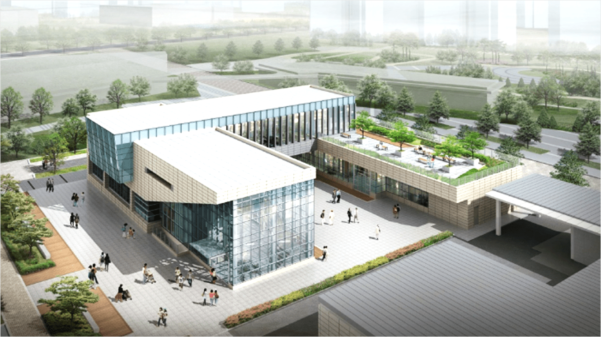

싱싱문화관은?

싱싱문화관은 단순하게 먹거리를 사고 파는 차원을 넘어 “로컬푸드 식문화”로 발전시키는 중추적 역할을 하기 위해 건립하였습니다.
싱싱장터가 생산자 중심의 공간이라면 싱싱문화관은 소비자에게 중점을 두어 서로 신뢰와 배려를 통해 세종형 로컬푸드 운동을 만들어 가는 공간입니다.
단순히 음식을 만들어 판매하는 식당이 아닌, 식(食)을 통한 도농소통과 로컬푸드에 공감하는 시민들이 만나는 공간으로 구성되었습니다.